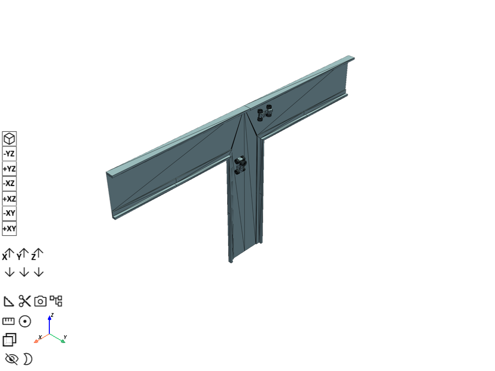
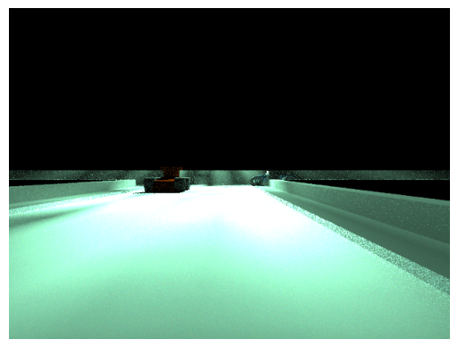
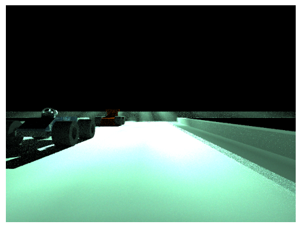
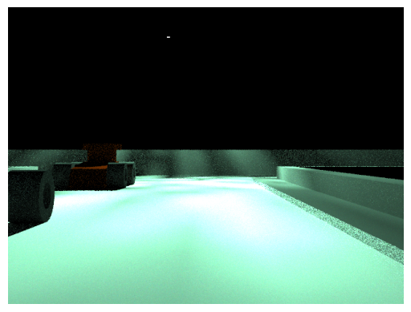

Download this example
Download this example as a Jupyter Notebook or as a Python script. All assets used in the examples can be downloaded as a ZIP archive.
Moving car example by combining Speos files#
This tutorial demonstrates how to run moving car workflow use case. ## Prerequisites
Perform imports#
[1]:
import os
from pathlib import Path
from ansys.speos.core import Part, Speos, launcher
from ansys.speos.core.generic.version_checker import server_version_checker
from ansys.speos.core.kernel.client import (
default_docker_channel,
)
from ansys.speos.core.sensor import SensorCamera
from ansys.speos.core.simulation import SimulationInverse
from ansys.speos.core.source import SourceLuminaire
from ansys.speos.core.workflow.combine_speos import SpeosFileInstance, combine_speos
Define constants#
Constants help ensure consistency and avoid repetition throughout the example.
[2]:
HOSTNAME = "localhost"
GRPC_PORT = 50098 # Be sure the Speos GRPC Server has been started on this port.
CAR_NAMES = ["BlueCar", "RedCar"]
ENVIRONMENT_NAME = "Env_Simplified"
USE_DOCKER = True # Set to False if you're running this example locally as a Notebook.
USE_GPU = False
Coordinate systems#
Define the global coordinate systems for each of the assets.
[3]:
GLOBAL_CS = [
0, # Origin x
0, # Origin y
0, # Origin z
1, # x-direction x
0, # x-direction y
0, # x-direction z
0, # y-direction x
1, # y-direction y
0, # y-direction z
0, # z-direction x
0, # z-direction y
1, # z-direction z
]
CAR_CS = {
"red": [-4000, 0, 48000, 1.0, 0.0, 0.0, 0.0, 0.0, -1.0, 0.0, 1.0, 0.0],
"blue": [2000, 0, 35000, 0.0, 0.0, -1.0, -1.0, 0.0, 0.0, 0.0, 1.0, 0.0],
}
Load assets#
Assets used to run this example are available in the PySpeos repository on GitHub.
Note: Make sure you have downloaded simulation assets and set
assets_data_pathto point to the assets folder.
[4]:
if USE_DOCKER: # Running on the remote server.
assets_data_path = Path("/app") / "assets"
else:
assets_data_path = Path("/path/to/your/download/assets/directory")
[5]:
# ## Create connection with speos rpc server
if USE_DOCKER:
speos = Speos(channel=default_docker_channel())
else:
speos = launcher.launch_local_speos_rpc_server(port=GRPC_PORT)
/home/runner/work/pyspeos/pyspeos/.venv/lib/python3.14/site-packages/ansys/tools/common/cyberchannel.py:201: UserWarning: Starting gRPC client without TLS on localhost:50098. This is INSECURE. Consider using a secure connection.
warn(f"Starting gRPC client without TLS on {target}. This is INSECURE. Consider using a secure connection.")
Combine several speos files into one project#
Here we are building a project with:
An environment which is a road
A blue car
A red car
[6]:
full_env_path = assets_data_path / f"{ENVIRONMENT_NAME}.speos" / f"{ENVIRONMENT_NAME}.speos"
car_paths = [assets_data_path / f"{car}.speos" / f"{car}.speos" for car in CAR_NAMES]
assets = [
SpeosFileInstance(
speos_file=str(full_env_path),
axis_system=GLOBAL_CS,
),
SpeosFileInstance(
speos_file=str(car_paths[0]),
axis_system=CAR_CS["red"],
),
SpeosFileInstance(
speos_file=str(car_paths[1]),
axis_system=CAR_CS["blue"],
),
]
p = combine_speos(
speos=speos,
speos_to_combine=assets,
)
[7]:
print(p)
{
"part_guid": "6d39a67a-57a1-4d84-98d3-3efa84ac3956",
"materials": [
{
"name": "Env_Simplified.Material.1",
"metadata": {
"UniqueId": "8da2e445-e6c5-4568-88f4-172e41500b01"
},
"vop_guid": "0b1bd97d-024c-48bf-a6b4-62beac1ce5af",
"geometries": {
"geo_paths": [
"Env_Simplified/Solid:1195288205"
]
},
"sop_guid": "11506ed2-547e-4f47-81df-735d6d0c9a16",
"display_name": "",
"description": "",
"sop_guids": [],
"vop": {
"opaque": {},
"name": "",
"description": "",
"metadata": {}
},
"sop": {
"library": {
"sop_file_uri": "/app/assets/Env_Simplified.speos/RL_Road_107_6c27-753a-e5eb-38d0..anisotropicbsdf"
},
"name": "",
"description": "",
"metadata": {}
}
},
{
"name": "Env_Simplified.Material.2",
"metadata": {
"UniqueId": "86bc6e3d-8f75-44cd-a132-bcfd407d2e8c"
},
"vop_guid": "0b1bd97d-024c-48bf-a6b4-62beac1ce5af",
"geometries": {
"geo_paths": [
"Env_Simplified/Sidewalk:530980414"
]
},
"sop_guid": "1b66d8ee-3269-4864-8dbe-13c0c284cbb1",
"display_name": "",
"description": "",
"sop_guids": [],
"vop": {
"opaque": {},
"name": "",
"description": "",
"metadata": {}
},
"sop": {
"library": {
"sop_file_uri": "/app/assets/Env_Simplified.speos/Side Walk_33b4-3fff-6c8d-7671..scattering"
},
"name": "",
"description": "",
"metadata": {}
}
},
{
"name": "Env_Simplified.Material.3",
"metadata": {
"UniqueId": "f9599939-77dd-4e7a-9654-08f8cebffbf8"
},
"vop_guid": "0b1bd97d-024c-48bf-a6b4-62beac1ce5af",
"geometries": {
"geo_paths": [
"Env_Simplified/Sidewalk:895709635"
]
},
"sop_guid": "1b66d8ee-3269-4864-8dbe-13c0c284cbb1",
"display_name": "",
"description": "",
"sop_guids": [],
"vop": {
"opaque": {},
"name": "",
"description": "",
"metadata": {}
},
"sop": {
"library": {
"sop_file_uri": "/app/assets/Env_Simplified.speos/Side Walk_33b4-3fff-6c8d-7671..scattering"
},
"name": "",
"description": "",
"metadata": {}
}
},
{
"name": "Env_Simplified.Material.4",
"metadata": {
"UniqueId": "e668afac-6b51-4a24-95d4-4a60ea0fa294"
},
"geometries": {
"geo_paths": [
"Env_Simplified/Sidewalk:895709635/face.1:316406917",
"Env_Simplified/Sidewalk:895709635/face.1:1112941297"
]
},
"sop_guid": "b0fc0df9-48d3-4cdf-9abc-b25cb27cedaf",
"display_name": "",
"description": "",
"sop_guids": [],
"sop": {
"library": {
"sop_file_uri": "/app/assets/Env_Simplified.speos/Grey Diffuse Paint_3635-3935-3d63-16d6..scattering"
},
"name": "",
"description": "",
"metadata": {}
}
},
{
"name": "Env_Simplified.Material.5",
"metadata": {
"UniqueId": "563048aa-441c-4841-952c-b230d74128e5"
},
"vop_guid": "0b1bd97d-024c-48bf-a6b4-62beac1ce5af",
"geometries": {
"geo_paths": [
"Env_Simplified/Sidewalk:4000640054"
]
},
"sop_guid": "1b66d8ee-3269-4864-8dbe-13c0c284cbb1",
"display_name": "",
"description": "",
"sop_guids": [],
"vop": {
"opaque": {},
"name": "",
"description": "",
"metadata": {}
},
"sop": {
"library": {
"sop_file_uri": "/app/assets/Env_Simplified.speos/Side Walk_33b4-3fff-6c8d-7671..scattering"
},
"name": "",
"description": "",
"metadata": {}
}
},
{
"name": "Env_Simplified.Material.6",
"metadata": {
"UniqueId": "c7a7df6c-704f-4db9-9971-a6fef14e237d"
},
"geometries": {
"geo_paths": [
"Env_Simplified/Sidewalk:4000640054/face.1:4194215934",
"Env_Simplified/Sidewalk:4000640054/face.1:1230904683"
]
},
"sop_guid": "b0fc0df9-48d3-4cdf-9abc-b25cb27cedaf",
"display_name": "",
"description": "",
"sop_guids": [],
"sop": {
"library": {
"sop_file_uri": "/app/assets/Env_Simplified.speos/Grey Diffuse Paint_3635-3935-3d63-16d6..scattering"
},
"name": "",
"description": "",
"metadata": {}
}
},
{
"name": "BlueCar.Material.1",
"metadata": {
"UniqueId": "93f70736-94f4-4f8b-9785-d1e46cd16a9e"
},
"geometries": {
"geo_paths": [
"BlueCar/Solid1:1003010499/face.1:3959360578",
"BlueCar/Solid1:1003010499/face.1:198338723",
"BlueCar/Solid1:1003010499/face.1:58624004",
"BlueCar/Solid1:1003010499/face.1:494376775",
"BlueCar/Solid1:1003010499/face.1:80289655",
"BlueCar/Solid1:1003010499/face.1:2640544264",
"BlueCar/Solid1:1003010499/face.1:979555788",
"BlueCar/Solid1:1003010499/face.1:1422834106",
"BlueCar/Solid1:1003010499/face.1:1333055594",
"BlueCar/Solid1:1003010499/face.1:3576083206",
"BlueCar/Solid1:1003010499/face.1:71526350",
"BlueCar/Solid1:1003010499/face.1:2202450522",
"BlueCar/Solid1:1003010499/face.1:2799526280",
"BlueCar/Solid1:1003010499/face.1:1190135145",
"BlueCar/Solid1:1003010499/face.1:3553322030",
"BlueCar/Solid1:1003010499/face.1:870711503",
"BlueCar/Solid1:1003010499/face.1:377346845",
"BlueCar/Solid1:1003010499/face.1:2109332205",
"BlueCar/Solid1:1003010499/face.1:3890985345",
"BlueCar/Solid1:1003010499/face.1:915303753",
"BlueCar/Solid1:1003010499/face.1:2466102311",
"BlueCar/Solid1:1003010499/face.1:3076941813",
"BlueCar/Solid1:1003010499/face.1:1464533780",
"BlueCar/Solid1:1003010499/face.1:2588835825",
"BlueCar/Solid1:1003010499/face.1:2053315344",
"BlueCar/Solid:2710379468/face.1:1829196173",
"BlueCar/Solid:2710379468/face.1:3160573253",
"BlueCar/Solid:2710379468/face.1:996628689",
"BlueCar/Solid:2710379468/face.1:577740154",
"BlueCar/Solid:2710379468/face.1:3259169179",
"BlueCar/Solid:2710379468/face.1:3889766985",
"BlueCar/Solid:2710379468/face.1:2306166335",
"BlueCar/Solid:2710379468/face.1:2463049711",
"BlueCar/Solid:2710379468/face.1:144524419",
"BlueCar/Solid:2710379468/face.1:3656945739",
"BlueCar/Solid:2169288061/face.1:3296663008",
"BlueCar/Solid:2169288061/face.1:354074920",
"BlueCar/Solid:2169288061/face.1:2451512508",
"BlueCar/Solid:2169288061/face.1:2333595927",
"BlueCar/Solid:2169288061/face.1:1799011830",
"BlueCar/Solid:2169288061/face.1:1319200292",
"BlueCar/Solid:2169288061/face.1:537725522",
"BlueCar/Solid:2169288061/face.1:1001874306",
"BlueCar/Solid:2169288061/face.1:2716139758",
"BlueCar/Solid:2169288061/face.1:1887491110"
]
},
"sop_guid": "063be7a8-7566-46aa-9ed5-a96c8903483f",
"display_name": "",
"description": "",
"sop_guids": [],
"sop": {
"library": {
"sop_file_uri": "/app/assets/BlueCar.speos/Grey Diffuse Paint_5d78-9f5b-6612-4c7a..scattering"
},
"name": "",
"description": "",
"metadata": {}
}
},
{
"name": "BlueCar.Material.2",
"metadata": {
"UniqueId": "cf3e283c-8165-47ca-bbc4-00316c124573"
},
"geometries": {
"geo_paths": [
"BlueCar/Solid:3252217597/face.1:1645799713",
"BlueCar/Solid:3252217597/face.1:3709259256",
"BlueCar/Solid:3252217597/face.1:3245061952",
"BlueCar/Solid:3252217597/face.1:1740077551",
"BlueCar/Solid:516754967/face.1:1903508963",
"BlueCar/Solid:516754967/face.1:3464173882",
"BlueCar/Solid:516754967/face.1:3523634050",
"BlueCar/Solid:516754967/face.1:1960488237",
"BlueCar/Solid:2263335813/face.1:4106343688",
"BlueCar/Solid:2263335813/face.1:1271919057",
"BlueCar/Solid:2263335813/face.1:1471318889",
"BlueCar/Solid:2263335813/face.1:4050535878",
"BlueCar/Solid:1920065013/face.1:2151688549",
"BlueCar/Solid:1920065013/face.1:1062079932",
"BlueCar/Solid:1920065013/face.1:590575364",
"BlueCar/Solid:1920065013/face.1:2247080363"
]
},
"sop_guid": "80379d2e-294a-41be-875f-34612b2bc4ec",
"display_name": "",
"description": "",
"sop_guids": [],
"sop": {
"library": {
"sop_file_uri": "/app/assets/BlueCar.speos/TireDiffusor_06ab-e65b-b541-c3ab..simplescattering"
},
"name": "",
"description": "",
"metadata": {}
}
},
{
"name": "BlueCar.Material.3",
"metadata": {
"UniqueId": "d391cffb-50db-434c-bf41-6079a2515a9a"
},
"geometries": {
"geo_paths": [
"BlueCar/Solid:401601473/face.1:864256700",
"BlueCar/Solid:401601473/face.1:674884460",
"BlueCar/Solid:401601473/face.1:3652159984",
"BlueCar/Solid:401601473/face.1:4231287330",
"BlueCar/Solid:401601473/face.1:471414467",
"BlueCar/Solid:401601473/face.1:2300729220",
"BlueCar/Solid:401601473/face.1:574129345",
"BlueCar/Solid:401601473/face.1:452256235",
"BlueCar/Solid:401601473/face.1:302409131",
"BlueCar/Solid:401601473/face.1:2287208135",
"BlueCar/Solid:401601473/face.1:1496437263",
"BlueCar/Solid:401601473/face.1:1811732616",
"BlueCar/Solid:401601473/face.1:3482257894",
"BlueCar/Solid:401601473/face.1:3927233076",
"BlueCar/Solid:401601473/face.1:171554517",
"BlueCar/Solid:401601473/face.1:3342649904",
"BlueCar/Solid:401601473/face.1:1923399684",
"BlueCar/Solid:401601473/face.1:965965728",
"BlueCar/Solid:401601473/face.1:498577886",
"BlueCar/Solid:401601473/face.1:2290929817",
"BlueCar/Solid:401601473/face.1:1755427960",
"BlueCar/Solid:401601473/face.1:597033948",
"BlueCar/Solid:401601473/face.1:2378553484",
"BlueCar/Solid:401601473/face.1:395820000",
"BlueCar/Solid:401601473/face.1:3337776936",
"BlueCar/Solid:401601473/face.1:3915963223",
"BlueCar/Solid:401601473/face.1:2277816097",
"BlueCar/Solid:401601473/face.1:2625560305",
"BlueCar/Solid:401601473/face.1:103595421",
"BlueCar/Solid:401601473/face.1:3611912533",
"BlueCar/Solid:401601473/face.1:1347204289",
"BlueCar/Solid:401601473/face.1:2931020918",
"BlueCar/Solid:401601473/face.1:887207706",
"BlueCar/Solid:401601473/face.1:3850658770",
"BlueCar/Solid:401601473/face.1:4157302709",
"BlueCar/Solid:401601473/face.1:2618254917",
"BlueCar/Solid:401601473/face.1:2855086790",
"BlueCar/Solid:401601473/face.1:2772707565",
"BlueCar/Solid:401601473/face.1:2304452156",
"BlueCar/Solid:401601473/face.1:2745827269",
"BlueCar/Solid:401601473/face.1:2987588024",
"BlueCar/Solid:401601473/face.1:45237037",
"BlueCar/Solid:401601473/face.1:1887340406",
"BlueCar/Solid:401601473/face.1:994652370",
"BlueCar/Solid:401601473/face.1:552818946",
"BlueCar/Solid:401601473/face.1:1808068262",
"BlueCar/Solid:401601473/face.1:3774898119",
"BlueCar/Solid:401601473/face.1:3421668926",
"BlueCar/Solid:401601473/face.1:3662250051",
"BlueCar/Solid:401601473/face.1:3575677544",
"BlueCar/Solid:401601473/face.1:4181691577"
]
},
"sop_guid": "326e5890-9341-4ec2-9bf2-9a7ae27197ce",
"display_name": "",
"description": "",
"sop_guids": [],
"sop": {
"library": {
"sop_file_uri": "/app/assets/BlueCar.speos/Car_Paint_Material_Blue_365b-9ed1-1e57-eedd..brdf"
},
"name": "",
"description": "",
"metadata": {}
}
},
{
"name": "RedCar.Material.1",
"metadata": {
"UniqueId": "b93e00e4-dfed-48d8-9728-28ad8db673ab"
},
"geometries": {
"geo_paths": [
"RedCar/Solid:3635120264/face.1:1613122768",
"RedCar/Solid:3635120264/face.1:3094519244",
"RedCar/Solid:3635120264/face.1:3580074009",
"RedCar/Solid:3635120264/face.1:927409569",
"RedCar/Solid:2051257771/face.1:210648018",
"RedCar/Solid:2051257771/face.1:1637826055",
"RedCar/Solid:2051257771/face.1:66842235",
"RedCar/Solid:2051257771/face.1:2878201919",
"RedCar/Solid:739836401/face.1:3889611434",
"RedCar/Solid:739836401/face.1:1581167125",
"RedCar/Solid:739836401/face.1:4131961937",
"RedCar/Solid:739836401/face.1:3950733020",
"RedCar/Solid:635282113/face.1:3094435495",
"RedCar/Solid:635282113/face.1:268916963",
"RedCar/Solid:635282113/face.1:221545070",
"RedCar/Solid:635282113/face.1:3346128909"
]
},
"sop_guid": "c3ae91a9-959f-4f95-8bd2-fed946733d35",
"display_name": "",
"description": "",
"sop_guids": [],
"sop": {
"library": {
"sop_file_uri": "/app/assets/RedCar.speos/TireDiffusor_a5c2-fa68-db22-4ccb..simplescattering"
},
"name": "",
"description": "",
"metadata": {}
}
},
{
"name": "RedCar.Material.2",
"metadata": {
"UniqueId": "d6dacb89-583a-49ad-b106-ed4adf3d8f6d"
},
"geometries": {
"geo_paths": [
"RedCar/Solid:39455731/face.1:1896962477",
"RedCar/Solid:39455731/face.1:3993234924",
"RedCar/Solid:39455731/face.1:669232533",
"RedCar/Solid:39455731/face.1:1809034615",
"RedCar/Solid:39455731/face.1:3571969486",
"RedCar/Solid:39455731/face.1:1185658288",
"RedCar/Solid:39455731/face.1:3291192008",
"RedCar/Solid:39455731/face.1:1891688472",
"RedCar/Solid:39455731/face.1:3563865060",
"RedCar/Solid:39455731/face.1:205034232",
"RedCar/Solid:39455731/face.1:1630115629"
]
},
"sop_guid": "8253431b-dc3a-4347-af08-9b98cb2d9396",
"display_name": "",
"description": "",
"sop_guids": [],
"sop": {
"library": {
"sop_file_uri": "/app/assets/RedCar.speos/Red Diffuse Paint_c594-8c92-c39c-e0b0..scattering"
},
"name": "",
"description": "",
"metadata": {}
}
}
],
"name": "",
"description": "",
"metadata": {},
"sub_scene_anchor_axis_system": [],
"sources": [],
"sensors": [],
"simulations": [],
"scenes": []
}
Preview the project#
User can review the created/loaded project using preview method.
[8]:
p.preview()
/home/runner/work/pyspeos/pyspeos/.venv/lib/python3.14/site-packages/ansys/tools/visualization_interface/backends/pyvista/pyvista_interface.py:479: UserWarning: Failed to use notebook backend "html": Please install `ipywidgets`.
Falling back to a static output.
Available backends: "static", "none"
Install trame for interactive backends: pip install "pyvista[jupyter]"
self.scene.show(jupyter_backend=jupyter_backend, **kwargs)

Complete the project with sensor/source/simulation#
We are adding a camera sensor to have output results, a luminaire to have a light source.
And, we gather the source and the sensor into a simulation (we will compute it just after).
Create a sensor#
[9]:
ssr = p.create_sensor(name="Camera.1", feature_type=SensorCamera)
ssr.distortion_file_uri = str(
assets_data_path / "CameraInputFiles" / "CameraDistortion_190deg.OPTDistortion"
)
ssr.set_mode_photometric().transmittance_file_uri = str(
assets_data_path / "CameraInputFiles" / "CameraTransmittance.spectrum"
)
color_mode = ssr.set_mode_photometric().set_mode_color()
color_mode.red_spectrum_file_uri = str(
assets_data_path / "CameraInputFiles" / "CameraSensitivityRed.spectrum"
)
color_mode.blue_spectrum_file_uri = str(
assets_data_path / "CameraInputFiles" / "CameraSensitivityBlue.spectrum"
)
color_mode.green_spectrum_file_uri = str(
assets_data_path / "CameraInputFiles" / "CameraSensitivityGreen.spectrum"
)
[10]:
ssr.axis_system = [-2000, 1500, 11000, -1, 0, 0, 0, 1, 0, 0, 0, -1]
ssr.commit()
[10]:
<ansys.speos.core.sensor.SensorCamera at 0x7f7f80dcaf90>
Create a source#
In this example, a luminaire source is created with an IES file.
More details on creating/editing source examples can be found in core examples.
[11]:
src = p.create_source(name="Luminaire.1", feature_type=SourceLuminaire)
src.intensity_file_uri = assets_data_path / "IES_C_DETECTOR.ies"
src.spectrum.set_daylightfluorescent()
src.axis_system = [0, 10000, 50000, 1, 0, 0, 0, 1, 0, 0, 0, 1]
src.commit()
[11]:
<ansys.speos.core.source.SourceLuminaire at 0x7f7f80dcacf0>
Create a simulation#
More details on creating/editing simulation examples can be found in core examples.
[12]:
sim = p.create_simulation(name="Inverse.1", feature_type=SimulationInverse)
sim.sensor_paths = [ssr]
sim.source_paths = [src]
sim.commit()
[12]:
<ansys.speos.core.simulation.SimulationInverse at 0x7f7f80dcae40>
Run the simulation#
Simulation can be run using CPU via compute_CPU method or using GPU via compute_GPU method.
[13]:
run_sim = sim.compute_GPU if USE_GPU else sim.compute_CPU
run_sim() # Run the simulation
[13]:
[upload_response {
info {
uri: "de389875-4cff-4794-a730-ef15d3c82567"
file_name: "Camera.1.Irradiance.xmp"
file_size: 10639677
}
}
, upload_response {
info {
uri: "467072dd-ddea-49f0-b63f-7a0623c83c8b"
file_name: "Camera.1.hdr"
file_size: 519002
}
}
, upload_response {
info {
uri: "911d8231-b3e6-4b7b-879e-eb82410ff606"
file_name: "Camera.1.xmp"
file_size: 1805027
}
}
, upload_response {
info {
uri: "86764f1f-0058-480c-8a6f-b0badcf68863"
file_name: "Camera.1.png"
file_size: 741477
}
}
, upload_response {
info {
uri: "d57ab871-7f51-40d2-a1ea-7a0dfb6588c1"
file_name: "Inverse.1.html"
file_size: 997771
}
}
]
Check and review result#
Open result
[14]:
# Method available only on Windows OS or with Speos 2026 R1.2 or higher,
# which supports opening XMP results as images regardless of the OS.
if os.name == "nt" or server_version_checker.is_version_supported(2026, 1, 2):
from ansys.speos.core.workflow.open_result import open_result_image
open_result_image(simulation_feature=sim, result_name="Camera.1.png")

Modify part#
Move the part via changing the axis_system of a part.
axis_system is a list of 12 float values: x, y, z, x_vect_x, x_vect_y, x_vect_z, y_vect_x, y_vect_y, y_vect_z, z_vect_x, z_vect_y, z_vect_z.
[15]:
blue_car_sub_part = p.find(name="BlueCar", feature_type=Part.SubPart)[0]
blue_car_sub_part.axis_system = [2000, 0.0, 20000, 0.0, 0.0, -1.0, -1.0, 0.0, 0.0, 0.0, 1.0, 0.0]
blue_car_sub_part.commit()
[15]:
<ansys.speos.core.part.Part.SubPart at 0x7f802a6a9450>
Re-run simulation with the modified part position#
[16]:
run_sim()
[16]:
[upload_response {
info {
uri: "872689e3-4ae7-4a5d-8d26-db174471a16e"
file_name: "Camera.1.Irradiance.xmp"
file_size: 10389748
}
}
, upload_response {
info {
uri: "94704684-7b4a-4ce6-8183-6b96ebf3510d"
file_name: "Camera.1.hdr"
file_size: 519945
}
}
, upload_response {
info {
uri: "17392fb8-b612-4aba-8483-ea6452937267"
file_name: "Camera.1.xmp"
file_size: 1768220
}
}
, upload_response {
info {
uri: "0f6d2c4e-02d0-4aca-9dab-ac0b8f15698b"
file_name: "Camera.1.png"
file_size: 728601
}
}
, upload_response {
info {
uri: "004249a2-8c9f-4809-892b-9dd0044f30e2"
file_name: "Inverse.1.html"
file_size: 981890
}
}
]
Review result:
[17]:
# Method available only on Windows OS or with Speos 2026 R1.2 or higher,
# which supports opening XMP results as images regardless of the OS.
if os.name == "nt" or server_version_checker.is_version_supported(2026, 1, 2):
open_result_image(simulation_feature=sim, result_name="Camera.1.png")

Modify camera property#
Modify the camera, e.g. focal length to 10
[18]:
cam1 = p.find(name="Camera.1", feature_type=SensorCamera)[0]
cam1.focal_length = 10
cam1.commit()
[18]:
<ansys.speos.core.sensor.SensorCamera at 0x7f7f80dcaf90>
Re-run the simulation and review result
[19]:
run_sim()
# Method available only on Windows OS or with Speos 2026 R1.2 or higher,
# which supports opening XMP results as images regardless of the OS.
if os.name == "nt" or server_version_checker.is_version_supported(2026, 1, 2):
open_result_image(simulation_feature=sim, result_name="Camera.1.png")

[20]:
speos.close()
[20]:
True
Download this example
Download this example as a Jupyter Notebook or as a Python script. All assets used in the examples can be downloaded as a ZIP archive.